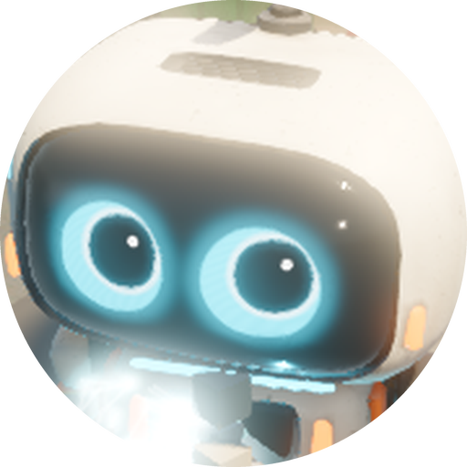

Greenfall
Everything you need to write about Greenfall. All screenshots and logos here may be used in coverage of the game.
Description
Greenfall is a cozy incremental 3D game about one small robot and one very big cleanup. You play Lumi (LM-1), the seed-keeper bot of the ark Cradle, who is thrown off the ship in a meteor storm and lands on Verdance, a planet buried under centuries of junk.
Lumi runs on green light, and there's no green left. To recharge his Bloom Core and get home he cleans the ground with a tractor beam, presses junk into bales, builds and commands a crew of helper robots, plants seeds, keeps them alive with watering robots, and restores ruined bases into a bright futuristic world, flying rockets between them as the planet comes back to life.
History
Greenfall started from a simple contrast: incremental games are wonderful at making numbers go up, but the world they show rarely changes. What if every upgrade made the place visibly greener? The first prototype was a single hex of junk and a scoop. Bales, the robot crew, the hex planet, the Command view, planting and watering, base levels and rockets followed, each one built so the player can see their effect on the world.
The tone is grounded and warm: realistic light and materials, a little dry humour, a lonely robot who keeps going anyway. The game is built in Godot 4 with original code, procedural audio and models, and CC0 textures.
Features
- Clean and bale: beam junk into the hopper, press it into bales and sell them; clean, tightly packed bales are worth more.
- Robot crew: six robot types (cleaners, haulers, planters, waterers, lake skimmers, multibots), each upgradeable from rusty Mk I to sleek Mk IV.
- Command view: an overhead camera over the real district; mark hexes and give crews orders.
- Plant and sustain: seed clean ground and keep it watered with robots and refill tanks; hexes grow from Clean to Thriving.
- Bases that evolve: five base levels take each site from a ruined yard to a bright futuristic town.
- Rockets: rebuild launch pads and fly between bases, with launch and landing cinematics.
- Story: WREN, the ark's AI, memory shards, a corporate antagonist called the Ledger, and plenty of easter eggs.
- Research, events and offline progress: a 30-node research tree, world events like Salvage Surges and wildlife visits, and crews that keep working while you're away.
- Photo mode and Steam Deck support planned for launch.
Videos
The trailer is in production. It will appear on the home page and Steam page first.
Screenshots


Logos and icon
 SVG · PNG (for dark backgrounds)
SVG · PNG (for dark backgrounds)- SVG · PNG (for light backgrounds)

Lumi icon, 512 px PNG- Sprout mark, SVG


Contact
Press, streamers and creators: write to press@greenfall.example. We're happy to send Steam keys for coverage once the game or demo is available.